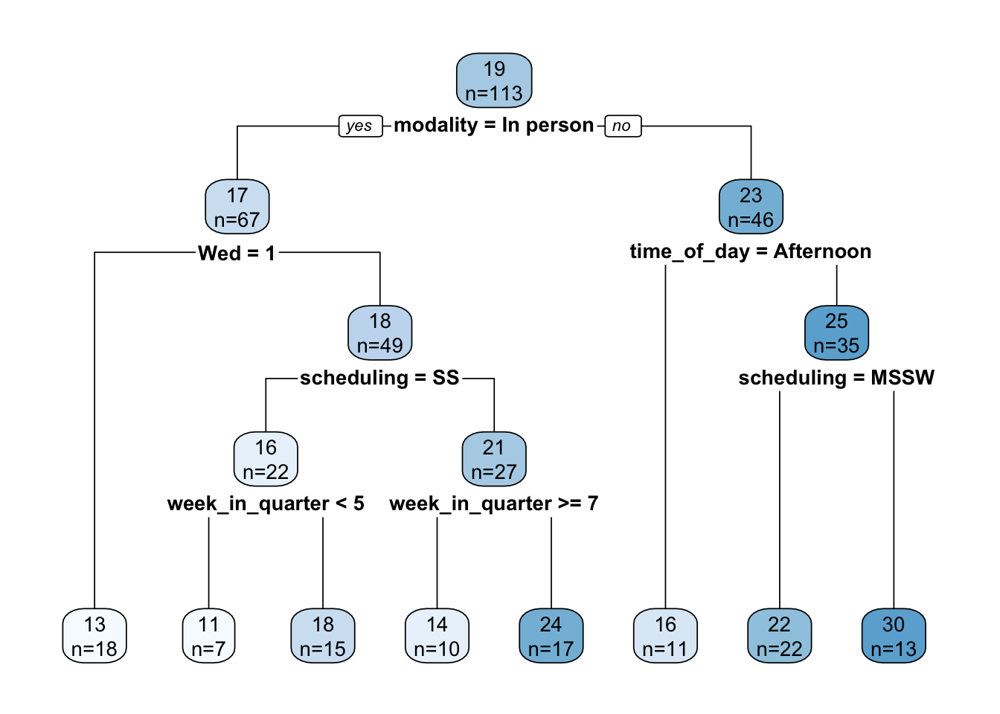

library(tidyverse)
library(rpart)
library(rpart.plot)
library(randomForest)
set.seed(314159)Decision tree modeling
Load data
Load the data and split out the days of the week into separate boolean columns to be able to treat each as a separate variable. (Recall that days_of_week records all days of the week on which the workshop took place. So, for example, Mon will be true if the workshop took place on Monday, and possibly other days.) Also, remove multi-campus workshops as their attendance numbers are not representative.
df <- read_csv("our-workshops.csv", col_types="cDiflfiff")
for (day in c("Mon", "Tue", "Wed", "Thu", "Fri")) {
df[[day]] <- grepl(day, df$days_of_week)
}
df <- filter(df, !multi_campus)Basic decision tree model
For starters, just model the entire dataset.
tree <- rpart(
num_students ~ (
modality +
scheduling +
week_in_quarter +
Mon + Tue + Wed + Thu + Fri +
time_of_day
),
data=df,
method="anova"
)
rpart.plot(tree, extra=1)
The tree is interpreted as follows. Each node displays the mean number of students and the number of workshops that mean was computed over. So, at the root node, the mean attendance is 19 over 113 workshops. At each conditional test, TRUE is always to the left and FALSE is always to the right.
An advantage of a decision tree is its explanatory ability. Caution must be used here, though, as the trees are not stable, but can vary wildly with changes in the training set or just a change in the random number seed. In our case, it does seem consistent that the primary cut (i.e., the most important variable, on average) is modality, with the cut point being in person vs. not in person. Beyond that, it’s not clear that there are any universal rules. Specific choices of scheduling or week in quarter might or might not yield higher attendance, depending on prior conditionals. We explore this further below.
But before we get too excited, how good is this model? Pretty bad. Let’s calculate a few statistics:
median = median(df$num_students)
rmse = sqrt(mean((predict(tree, df) - df$num_students)^2))
r2 = cor(predict(tree, df), df$num_students)^2The RMSE is 10.7, which is incredibly large given that the median number of students is 16. \(R^2\) is only 0.22.
Variable importance is as follows (these are percentages):
importance <-
round(tree$variable.importance/sum(tree$variable.importance)*100, 0)
importance %>%
enframe() %>%
rename(variable=name, importance=value)| variable | importance |
|---|---|
| week_in_quarter | 22 |
| time_of_day | 20 |
| modality | 20 |
| scheduling | 19 |
| Wed | 7 |
| Thu | 7 |
| Fri | 3 |
| Tue | 2 |
The top four variables are roughly equally important and account for 81% of the variability. But wait, those are just four of the five variables we started with! So basically, the individual day of the week variables added nothing.
Comparison with simple statistics
Let’s see how the decision tree lines up with some simple statistics on individual variables over the entire dataset. Note that we elide variable values for which the number of workshops is small.
single_variable_effect <- function(variable) {
df %>%
group_by("{variable}":=get(variable)) %>%
summarize(
num_workshops=n(),
mean_num_students=round(mean(num_students), 0)
) %>%
filter(num_workshops > 5) %>%
arrange(-mean_num_students)
}Modality
Since the root decision in the above decision tree is modality, the numbers here match the numbers at the tree root, no surprise.
| modality | num_workshops | mean_num_students |
|---|---|---|
| Online | 41 | 23 |
| In person | 67 | 17 |
Scheduling
A slight preference for workshops held over multiple weeks.
| scheduling | num_workshops | mean_num_students |
|---|---|---|
| MSMW | 15 | 24 |
| MSSW | 50 | 19 |
| SS | 48 | 18 |
Week in quarter
Here’s a surprise, attendance is substantially higher in week 6. Why?? Related to midterm timing?
| week_in_quarter | num_workshops | mean_num_students |
|---|---|---|
| 6 | 10 | 28 |
| 5 | 16 | 19 |
| 2 | 11 | 18 |
| 3 | 15 | 18 |
| 8 | 12 | 18 |
| 7 | 17 | 17 |
| 9 | 9 | 17 |
| 4 | 8 | 16 |
Lest you think week 6 attendance is driven by a few outliers, there’s actually fair variability across several variables:
df %>%
filter(week_in_quarter==6) %>%
mutate(year=format(date, "%Y")) %>%
select(year, title, modality, num_students)| year | title | modality | num_students |
|---|---|---|---|
| 2025 | Tidying Messy Spreadsheets with OpenRefine | In person | 9 |
| 2024 | Grad Slam 2024 | In person | 13 |
| 2023 | Planet Labs onboarding | Hybrid | 52 |
| 2023 | Data De-identification in Practice | Online | 35 |
| 2022 | R | In person | 34 |
| 2022 | R | In person | 33 |
| 2022 | Python | Online | 15 |
| 2021 | R | Online | 30 |
| 2019 | Counseling and Psychological Services (CAPS) - Career Staff Group | In person | 38 |
| 2019 | Bash/Git/Python | In person | 16 |
Day of week
Wednesday is least popular.
df %>%
pivot_longer(cols=c(Mon, Tue, Wed, Thu, Fri), names_to="day_of_week") %>%
group_by(day_of_week) %>%
filter(value == TRUE) %>%
summarize(
num_workshops=n(),
mean_num_students=round(mean(num_students), 0)
) %>%
arrange(-mean_num_students)| day_of_week | num_workshops | mean_num_students |
|---|---|---|
| Mon | 20 | 22 |
| Fri | 39 | 21 |
| Thu | 48 | 20 |
| Tue | 48 | 19 |
| Wed | 32 | 17 |
Time of day
A slight dispreference for the afternoon.
| time_of_day | num_workshops | mean_num_students |
|---|---|---|
| All day | 6 | 23 |
| Morning | 69 | 20 |
| Evening | 6 | 20 |
| Afternoon | 29 | 17 |
Summary
Summarizing, on average, attendance is higher if a workshop is scheduled:
- Online
- Multiple sessions over multiple weeks
- Week 6
- Not Wednesday
- Not in the afternoon
Random forest model
Let’s try a random forest to see if we can eke out a little better performance. We omit days of the week since they just seem to degrade performance. Rather than evaluating performance using a training/test split, the overall error will be estimated from the out-of-bag errors.
forest <- randomForest(
num_students ~ modality + scheduling + week_in_quarter + time_of_day,
data=df
)
# This expression looks weird, but it matches randomForest's internal code
rmse <- sqrt(forest[["mse"]][length(forest[["mse"]])])The RMSE is 11.8, even worse.
Quantized approach
Taking a cue from a paper by Angel et al1, we try quantizing the number of students into a small number of ranges (4 in our case), treat the index numbers of those ranges (1, 2, 3, …) as a continuous variable, create a regression model on that new variable, and measure performance using RMSE as before. In effect we are trading precision for what is hopefully increased accuracy.
When cutting the data into quartiles, the boundaries coincidentally closely align with multiples of 20. For improved interpretability we break on those cleaner boundaries.
df <- df %>% mutate(
attendance_level=cut(num_students, breaks=c(0, 20, 40, 60, 80), labels=FALSE)
)Create the model. Note that we’re ignoring a warning here that some attendance levels (the larger two, in fact) have fewer than 6 workshops.
forest_reg <- randomForest(
attendance_level ~ modality + scheduling + week_in_quarter + time_of_day,
data=df
)
rmse <- sqrt(forest_reg[["mse"]][length(forest_reg[["mse"]])])The RMSE is 0.64. Recall that the output variable takes on the integer values 1, 2, 3, 4. If the RMSE were less than 0.5, we might conclude that we can, on average, reliably round the model’s prediction to the correct value, but alas that’s not quite the case. How accurate is it? Let’s have the model make predictions on the entire dataset (acknowledging that that’s what it was trained on):
num_correct <- sum(round(predict(forest_reg, df), 0) == df$attendance_level)The accuracy (or what we might call the match against the training dataset) is 73%.
Rather than rounding the regression model’s prediction, we can create a classification model from the beginning. It might see this would be equivalent, but it isn’t, and it happens to yield slightly better results.
# Same as before, but create a factor instead of an integer variable
df <- df %>% mutate(
attendance_level=cut(num_students, breaks=c(0, 20, 40, 60, 80))
)
forest_cls <- randomForest(
attendance_level ~ modality + scheduling + week_in_quarter + time_of_day,
data=df
)
accuracy <- 1 - forest_cls[["err.rate"]][forest_cls[["ntree"]], "OOB"]The accuracy of this new model, estimated over out-of-bag errors, is 60%. To compare with the regression model, let’s perform the same prediction test over the entire dataset:
num_correct <- sum(predict(forest_cls, df) == df$attendance_level)The match against the training dataset is 85%, an increase. Given that this value is still nicely shy of 100% (no danger of an over-fitted model here), this leads us to believe that the new model is slightly more accurate.
Finally, the classification model provides us with a confusion matrix which can help understand where the model goes wrong.
forest_cls[["confusion"]] (0,20] (20,40] (40,60] (60,80] class.error
(0,20] 54 15 1 0 0.2285714
(20,40] 24 14 0 0 0.6315789
(40,60] 2 1 0 0 1.0000000
(60,80] 2 0 0 0 1.0000000As can be seen, the model is correct on the smallest attendance level 77% of the time. At the next level the accuracy drops to 37%, and then it’s completely wrong thereafter.
Bottom line, the model sucks.
Save the model
The only way to save a model is by writing it to a binary R data file, which means the saved form is dependent on both R and the package(s) required to interpret the saved data objects. (If an R data file is loaded without the required packages, the restored objects appear as generic base R objects such as lists and data frames.)
save(forest_cls, file="forest.Rdata")Run the model
To run the classification forest model on new data, load it from the saved file, create a row in a dummy data frame holding the new workshop scenario (only the variables used by the model need be supplied), and run predict against it. For example:
scenario <- tibble(
modality=factor("In person", levels=levels(df$modality)),
scheduling=factor("SS", levels=levels(df$scheduling)),
week_in_quarter=2,
time_of_day=factor("Lunchtime", levels=levels(df$time_of_day))
)
predict(forest_cls, scenario) 1
(0,20]
Levels: (0,20] (20,40] (40,60] (60,80]Footnotes
Avital Angel, Achituv Cohen, Trisalyn Nelson, and Pnina Plaut. Evaluating the relationship between walking and street characteristics based on big data and machine learning analysis. Cities 151, August 2024. https://doi.org/10.1016/j.cities.2024.105111.↩︎